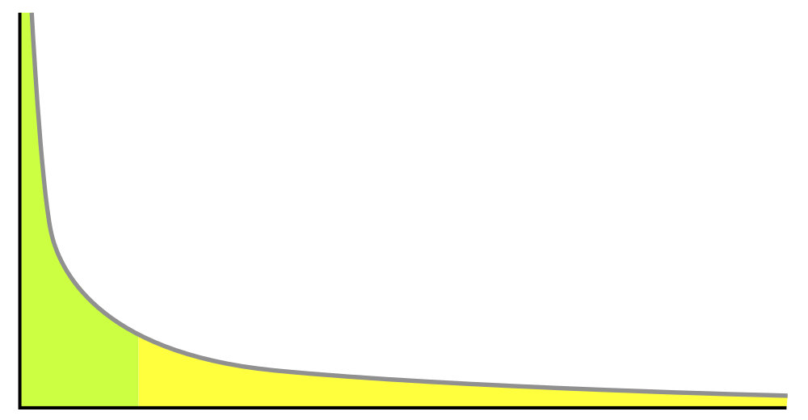

Executive Summary
AI 프로젝트의 실패는 대개 모델이 아니라 데이터에서 시작됩니다. Gartner는 2030년까지 AI 에이전트 배포 실패의 절반이 데이터 거버넌스 문제에서 비롯될 것이라 전망합니다. 그러나 "이 데이터가 AI 학습에 적합한가"라는 질문에 직관이 아닌 진단으로 답할 수 있는 팀은 많지 않습니다.
이 글은 페블러스 DataClinic이 134개 데이터셋·1200만 이미지를 진단하며 반복적으로 발견한 다섯 가지 신호 — 무결성, 균형, 픽셀 다양성, 피처 공간 분포, 클래스 분리도 — 를 정리합니다. 픽셀 레이어(L1)와 태스크 레이어(L2/L3)의 3단계 진단 구조에서 각 신호가 어떻게 측정되며, 어디가 무너지면 모델이 어떻게 실패하는지 ISO 5259-2 품질 측정 항목과 함께 매핑합니다.
결론은 단순합니다. AI-Ready Data는 "완벽한 데이터"가 아니라 "진단된 데이터"입니다. 다섯 가지 신호가 모두 초록일 때 비로소 모델은 학습을 시작할 자격을 얻습니다. 검증 없이 학습된 모델은 그럴듯하지만 모호한 데이터의 모호함을 그대로 닮습니다.
6%
레이블 오류
ImageNet 검증셋 (Cornell)
11.2%
극단 불균형
134개 중 15개가 100배 초과
61
중첩 클래스
Places365 피처 공간
91→
표면은 우수
Deepfake L1 점수의 함정
3축
품질 프레임
정확성·일관성·완전성
표면이 멀쩡해도 속은 무너져 있다 — L1과 L2/L3의 차이
이미지 데이터의 품질을 한 층으로 보면 자주 속습니다. 픽셀이 깨끗하고 클래스 수가 정돈된 데이터셋이 정작 학습에서 무너지는 일이 흔합니다. DataClinic은 데이터 진단을 세 단계로 나눕니다. L1은 픽셀 자체의 건강검진, L2는 범용 임베딩(Wolfram 1280차원) 위에서의 피처 공간 분석, L3는 도메인 특화 모델로 본 정밀 진단입니다.
세 단계가 필요한 이유는 한 사례로 충분히 설명됩니다. Star-MNIST는 L1 등급이 전부 양호하지만, L2 Geometry는 '나쁨'으로 떨어집니다. 픽셀 통계로는 멀쩡한 데이터가 임베딩 공간에서는 클래스 경계가 흐트러져 있다는 뜻입니다. 표면을 닦는 것과 속을 들여다보는 것은 다른 작업입니다.
DataClinic의 L1~L3 진단 항목은 국제 표준 ISO 5259-2의 품질 측정(QM) 항목과 1:1로 매핑됩니다. 완전성(Com-ML), 정합성(Con-ML), 균형성(Bal-ML), 다양성(Div-ML), 유사도(Sim-ML), 대표성(Rep-ML), 유효성(Eft-ML), 정확성(Acc-ML)이 각 신호로 연결됩니다. 표준이 추상적인 문서로 머무르지 않고 실제 측정값으로 환원될 때, 데이터 거버넌스는 비로소 측정 가능한 활동이 됩니다.
핵심 관찰: 표면이 멀쩡해도 속이 썩은 데이터가 있습니다. 픽셀 통계가 좋은 데이터셋이 임베딩 공간에서는 클래스 경계가 흐트러져 있고, L1 점수가 91점인 Deepfake 데이터셋이 L2에서는 Fake와 Real이 거의 완전히 혼재합니다. AI-Ready 여부는 한 층의 진단으로 결정되지 않습니다.
신호 1 — 무결성: 데이터가 거짓말을 하는 순간
가장 먼저 봐야 할 신호는 데이터 자체의 정직성입니다. 이미지 파일이 정상적으로 열리는가, 빈 이미지가 섞여있지 않은가, 무엇보다 레이블이 실제 내용과 일치하는가. DataClinic은 이를 L1_integrity와 L1_missingValue로 측정하며, ISO 5259-2의 완전성(Com-ML-1)·정합성(Con-ML-1/3) 항목과 매핑됩니다.
Cornell AI Lab의 Northcutt 연구진이 2021년 발표한 분석은 충격적입니다. ImageNet 검증셋의 약 6%가 잘못 레이블링되어 있었습니다. 학계가 10년 넘게 벤치마크로 사용해 온 데이터셋의 이야기입니다. "데이터가 많으면 괜찮을 거야"라는 가정이 가장 위험해지는 순간이 바로 이 신호가 나쁠 때입니다. 모델은 잘못된 레이블을 사실로 받아들이고, 그 위에 쌓인 정확도 숫자는 진실과 무관한 숫자가 됩니다.

DataClinic이 134개 데이터셋을 진단하며 반복적으로 본 패턴은 또 있습니다. 결손값(missing value)이 전체적으로는 '좋음' 등급이어도 특정 클래스에 집중되어 있으면 별도 경고가 필요합니다. 클래스 A는 결손이 0%인데 클래스 B는 30%라면, 모델은 클래스 B를 사실상 학습하지 못합니다. 평균은 진실을 가립니다.
신호 읽기: 레이블 무결성이 낮으면 모델은 틀린 답을 학습합니다. 가장 흔한 실수는 데이터 규모로 무결성 문제를 가리려는 시도입니다. 12만 장이 있어도 그 중 7천 장이 틀린 레이블이라면, 모델은 7천 장의 거짓말을 함께 학습합니다.
신호 2 — 균형: 소수 클래스는 학습되지 않는다
두 번째 신호는 가장 간단한 차트 하나로 보입니다. 클래스별 이미지 수 분포 — 막대 차트에서 어떤 클래스는 산처럼 솟고 어떤 클래스는 바닥에 깔립니다. DataClinic의 L1_classBalance는 이 격차를 측정하며, ISO 5259-2의 균형성(Bal-ML-1/2/3)에 대응합니다.
DataClinic이 진단한 134개 데이터셋 가운데 15개(11.2%)가 클래스 간 불균형 비율이 100배를 초과했습니다. 극단적인 사례는 OpenImages입니다. 가장 적은 클래스의 이미지 수가 3장인데 가장 많은 클래스는 220,154장이었습니다. 7만 배의 격차입니다. 이런 데이터셋으로 학습된 모델이 정확도 95%를 보고하더라도, 그 95%의 대부분은 다수 클래스에서 얻은 점수이고 소수 클래스는 사실상 무시되고 있을 가능성이 높습니다.

균형이 깨진 데이터에서는 정확도(accuracy)가 진실을 가리는 도구가 됩니다. F1-score, Precision-Recall 곡선, 클래스별 평가가 함께 보고되지 않으면 모델의 실제 성능은 알 수 없습니다. 더 본질적인 문제는 따로 있습니다. 많은 팀이 클래스 분포 차트 자체를 그려보지 않는다는 점입니다. 한 줄의 코드면 그릴 수 있는 차트가 그려지지 않는 동안, 모델은 보이지 않는 편향을 학습합니다.
신호 읽기: 100배가 넘는 클래스 불균형은 소수 클래스를 학습 과정에서 사실상 지웁니다. 데이터를 늘리기 전에 분포부터 봐야 합니다. 막대 차트 하나가 보여주는 진실이 12만 장의 환상을 깨뜨립니다.
신호 3 — 픽셀 다양성: 규모와 다양성은 다르다
세 번째 신호는 직관과 가장 자주 어긋나는 신호입니다. 이미지가 많다고 다양한 것이 아닙니다. DataClinic의 L1_statistics는 클래스 내부의 해상도·밝기·채널 분포가 얼마나 다양한지를 측정하며, ISO 5259-2의 다양성(Div-ML-1/2/3)에 대응합니다.
Birds 데이터셋의 두 버전이 흥미로운 대조를 보여줍니다. Birds 450은 모든 이미지를 224픽셀로 균일하게 리사이즈했고, 그 과정에서 카메라·거리·조명의 차이가 사라졌습니다. L1_statistics 등급은 '나쁨'이 나왔습니다. 반면 Birds 525는 원본 해상도를 유지(45px~4763px)하며 픽셀 다양성을 그대로 보존했고, 같은 항목에서 '좋음' 등급을 받았습니다. 같은 새, 다른 데이터셋, 다른 운명입니다.
더 충격적인 사례는 ImageNet입니다. 143만 장의 이미지를 가진 거대 데이터셋이지만 L1_statistics는 '나쁨' 등급이었습니다. 규모는 다양성을 보장하지 않습니다. 같은 촬영 조건, 같은 배경, 같은 조명으로 찍은 10만 장은 다른 조명에서 찍은 1만 장보다 학습 가치가 낮을 수 있습니다. 모델이 새로운 환경에서 무너지는 일반화 실패의 대표적 원인이 여기에 있습니다.
신호 읽기: "많은 이미지 = 좋은 데이터"라는 등식은 거짓입니다. 픽셀 다양성이 낮으면 모델은 학습 데이터의 환경 안에서만 잘 작동하고, 그 바깥에서는 처음 보는 사물처럼 헷갈립니다. 다양성은 숫자가 아니라 분포의 문제입니다.
신호 4 — 피처 공간 분포: 픽셀로는 안 보이는 중복과 아웃라이어
네 번째 신호부터는 픽셀의 세계를 떠나 임베딩의 세계로 들어갑니다. DataClinic의 L2 단계는 범용 임베딩 모델(Wolfram 1280차원)로 모든 이미지를 한 공간에 펼친 뒤, 그 안에서 밀도 분포와 클러스터 구조를 분석합니다. L2_geometry와 L2_distribution이 이 영역을 측정하며, ISO 5259-2의 유사도(Sim-ML-1/2/3)·대표성(Rep-ML-1)과 연결됩니다.

피처 공간에서 보이는 첫 번째 문제는 근중복(near-duplicates)입니다. 같은 이미지의 다른 크롭, 미세하게 변형된 복제본이 한 지점에 비정상적으로 모여 있으면 모델은 그 부분을 반복적으로 학습합니다. Stanford와 MIT의 2019년 연구(Recht et al.)는 ImageNet의 훈련셋과 검증셋 사이에 데이터 리케이지가 존재함을 밝혀내, 이 데이터셋으로 측정한 모델 성능 지표 자체의 신뢰성에 의문을 던졌습니다.
두 번째 문제는 아웃라이어입니다. 레이블은 분명히 클래스 A라고 적혀있는데 피처 공간에서는 다른 클래스와 더 가까이 있는 이미지 — 레이블 오류일 가능성이 높습니다. DataClinic이 한국 전통 수묵화 데이터셋(Report #194)을 진단했을 때 총점 57점이 나왔고, L2_distribution은 'Medium' 등급으로 떨어졌습니다. 74개 클래스 중 일부가 피처 공간에서 서로의 영역으로 흘러 들어가 있었기 때문입니다. 표면적으로는 잘 정돈된 라벨링이지만, 임베딩 위에서는 경계가 무너져 있던 셈입니다.
신호 읽기: 중복 이미지는 학습 사이클을 낭비하고 편향된 반복 학습을 강요합니다. 아웃라이어는 잘못된 레이블의 신호일 수 있습니다. 두 가지 모두 픽셀만 보면 안 보이고, 피처 공간을 시각화해야 보입니다. DataClinic의 Data Diet 기능이 고밀도 클러스터의 중복을 정리하는 이유가 여기에 있습니다.
신호 5 — 클래스 분리도: AI가 틀린 게 아니라 데이터가 모호한 것이다
다섯 번째 신호는 가장 늦게 드러나고 가장 결정적입니다. 클래스 간 경계가 얼마나 명확한가 — 같은 클래스 안의 이미지들이 서로 가깝고, 다른 클래스의 이미지들과는 멀리 떨어져 있는가. DataClinic의 L2_dataLens·L3_geometry·L3_distribution이 이 분리도를 측정하며, ISO 5259-2의 유효성(Eft-ML-1/2/3)·정확성(Acc-ML-7)과 매핑됩니다.
Places365 사례가 이 신호의 본질을 보여줍니다. 표면 진단(L1)에서는 클래스가 균일하게 분포되어 있고 픽셀 다양성도 충분했습니다. 그런데 L2 분석으로 들어가자 61개 클래스가 피처 공간에서 서로 중첩되어 있었습니다. "서재"와 "사무실", "해변"과 "해안선"은 사람도 헷갈리는 분류입니다. AI에게는 그 모호함이 그대로 학습 신호로 전달됩니다.

더 극적인 사례는 Deepfake 얼굴 데이터셋(Report #169)입니다. 19만 장이 넘는 이미지의 L1 총점이 91점, 표면적으로는 우수한 데이터셋이었습니다. 그러나 L2 분석은 Fake와 Real 두 클래스가 피처 공간에서 거의 완전히 혼재되어 있음을 보여줬습니다. 딥페이크 탐지가 본질적으로 어려운 이유가 데이터 레벨에서 드러난 순간입니다. L3 단계에서는 도메인 특화 모델로 1280차원을 더 압축된 차원으로 줄이며 분리도를 정밀하게 측정합니다.
신호 읽기: 클래스 분리도가 낮으면 아무리 좋은 모델도 혼동합니다. 이때 책임은 모델이 아니라 데이터에 있습니다. AI가 틀린 것이 아니라 데이터가 모호한 것입니다. 분리도가 낮은 데이터로 정확도를 끌어올리려는 시도는 본질적으로 잘못된 질문에 답하려는 시도입니다.
다섯 신호를 한 표에 — 어디가 무너지면 무엇이 실패하나
표 하나로 정리되는 진단이 결국 의사결정을 바꿉니다. 다섯 신호가 어떤 DataClinic 지표로 측정되고, ISO 5259-2의 어떤 품질 측정 항목과 맞물리며, 신호가 나빴을 때 모델이 어떻게 깨지는지를 같은 줄에 놓고 봤습니다.
| 신호 | DataClinic 지표 | ISO 5259 QM | 나쁠 때의 결과 |
|---|---|---|---|
| 무결성 | L1_integrity, L1_missingValue |
Com-ML-1, Con-ML-1/3 | 틀린 답을 사실로 학습 |
| 균형 | L1_classBalance |
Bal-ML-1/2/3 | 소수 클래스 무시 |
| 픽셀 다양성 | L1_statistics |
Div-ML-1/2/3 | 일반화 실패 |
| 피처 분포 | L2_geometry, L2_distribution |
Sim-ML-1/2/3, Rep-ML-1 | 중복 학습·아웃라이어 왜곡 |
| 분리도 | L2_dataLens, L3_geometry |
Eft-ML-1/2/3, Acc-ML-7 | 클래스 혼동 |
DataClinic이 134개 데이터셋·총 1200만 이미지를 진단하며 가장 자주 본 패턴은 "표면 점수가 좋고 심층 점수가 나쁜" 구조입니다. L1만 보면 합격이었던 데이터셋이 L2·L3에서 무너지는 경우, 모델 학습은 시작 단계에서 위험을 떠안게 됩니다. 다섯 신호를 모두 통과한 데이터셋만이 "AI-Ready"라고 부를 자격을 얻습니다.
실무 팁: 진단 후 65점이었던 데이터셋이 식별된 문제를 정리하면 90점 이상으로 개선되는 사례가 적지 않습니다. 데이터 정제는 양을 늘리는 것이 아니라 신호를 맞추는 작업입니다. 12만 장을 새로 모으기 전에, 가진 데이터의 다섯 신호부터 들여다보는 것이 빠르고 정확합니다.
AI-Ready Data — 신호가 모두 초록이 되는 날
AI-Ready Data는 완벽한 데이터가 아닙니다. 다섯 가지 신호가 측정되었고, 각 신호의 상태가 알려져 있고, 무너진 신호를 어떻게 회복할지에 대한 계획이 있는 데이터입니다. 완벽함보다 진단 가능성이, 깨끗함보다 추적 가능성이 더 결정적입니다.
페블러스가 데이터 품질 작업을 정확성·일관성·완전성의 3축으로 정의하는 이유가 여기에 있습니다. 무결성과 분리도는 정확성에, 균형과 피처 분포는 일관성에, 픽셀 다양성과 결손은 완전성에 연결됩니다. 다섯 신호는 곧 3축의 측정 가능한 표현입니다. DataClinic의 진단이 끝나는 곳에서 Data Greenhouse(에이전틱 자율 데이터 운영)가 시작되며, 진단된 데이터는 자율적으로 학습되고 모니터링됩니다.
현재 페블러스 DataClinic은 34개국 사용자가 활용하고 있고, 조달청 혁신제품으로 지정되어 있습니다. 그러나 도구보다 더 중요한 것은 질문의 전환입니다. "데이터가 충분한가"에서 "데이터가 진단되었는가"로. 다섯 가지 신호는 그 전환을 위한 출발점이고, AI 프로젝트의 성공률은 모델 선택보다 이 질문의 답에 더 가깝게 달려 있습니다.
마무리 질문: 지금 학습하려는 데이터셋의 다섯 신호 중, 몇 개를 측정해 봤습니까? 그 답이 "한 번도"라면, 모델 학습보다 진단이 먼저입니다. 12만 장도 틀릴 수 있고, 측정되지 않은 데이터는 측정될 때까지 그저 가능성에 불과합니다.